Training products
Government of Canada - Transport Canada
Transportation of Dangerous Goods
Training resources for print & web
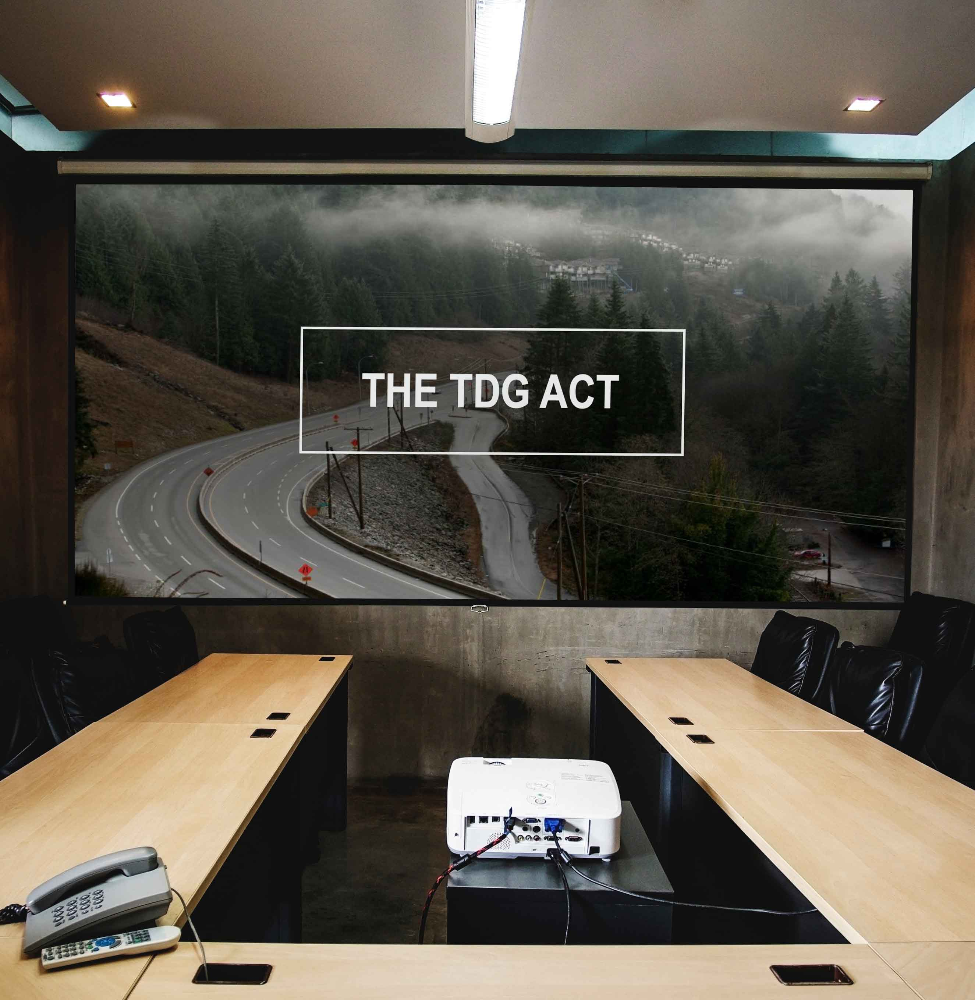
The Overview
A little bit of background
From mid 2019 until late 2020, I had the pleasure of working with Transport Canada in the Transportation of Dangerous Goods department as a Junior Analyst. During my time there, I not only performed data analysis as my main job, but I also had the opportunity to design resource documents and graphics to help train Data Quality Analysts living in each Canadian region, and new local employees joining the team!
The Mission
Since the data that the Dangerous Goods Accident Information Team processes is quite considerable, I wanted the reference documents to be as visually engaging as possible. It was important to the success of each document to engage the trainees with creative content organization that made sense. Oh and I forgot to mention the challenge: sometimes, the only tool I could use was Microsoft Powerpoint...(I know, right? WOAH.)
First up: A PowerPoint Presentation
The Ideas from my Brain
Here's how I made it work
The content that I had to work with for this 2-day presentation was very lengthy, forcing me to use extreme creativity to make it more engaging to look at. I organized sections of content, such as areas where regulations were listed, into creative bullets. I also made sure to incorporate the already existing colour palette of Transport Canada's brand into the presentation. Since the colours were already so bright and diverse, it made the presentation a little bit more appealing for the trainees to look at for a grand total of 2 full days.
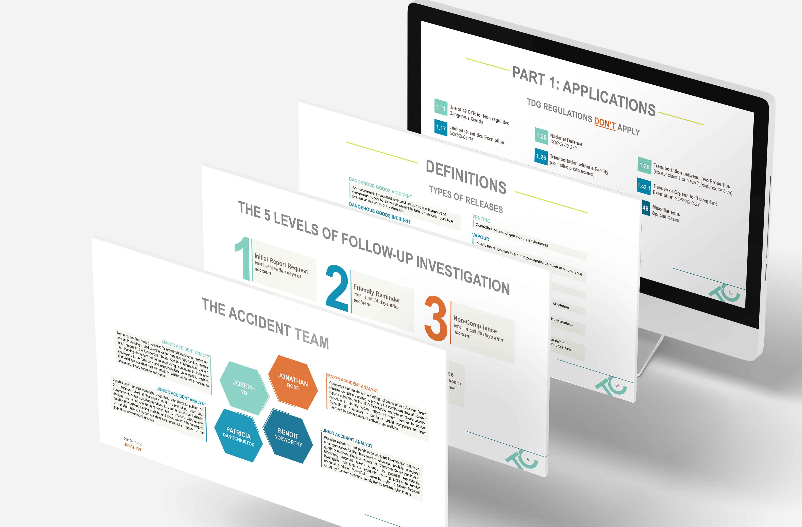
By using imagery and strategic placement of type, I was even able to make lengthy definitions look interesting enough to read forever.
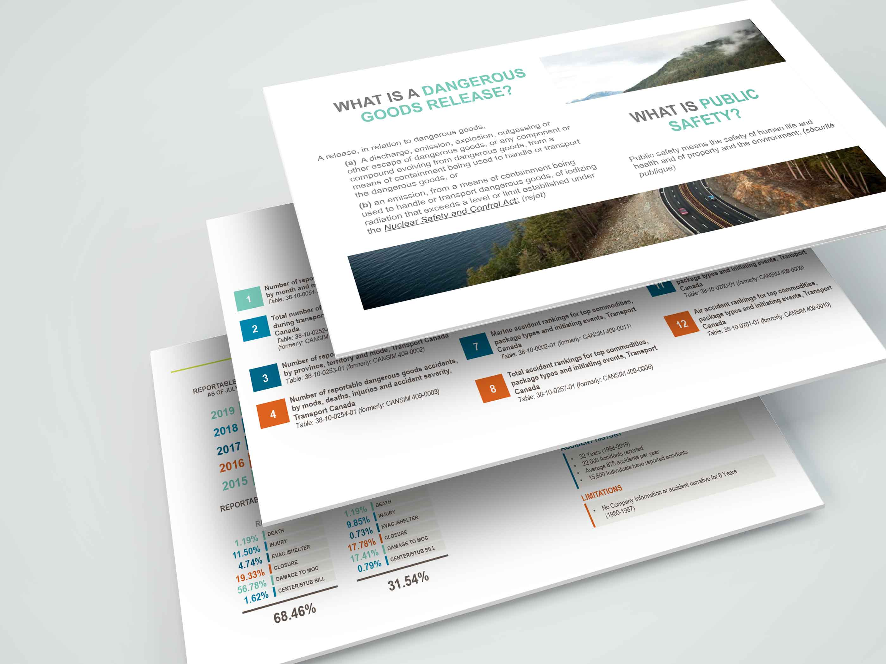
I utilized the widescreen format of the presentation by halving some of the slides. This separates the heavy content from respective titles. Colours are used also to create a more inviting feel. Though not initially visible, each colour throughout the presentation actually corresponds to each presenter. This helps the presenters recognize when it's time to begin speaking their part.
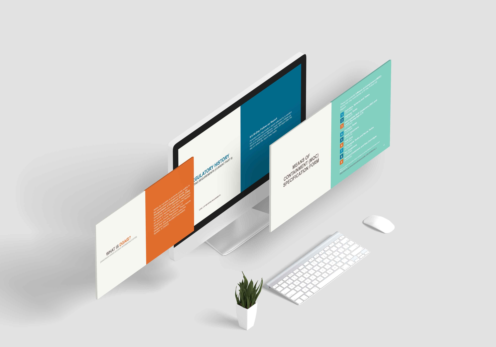
The process
Colour palette
Transport Canada has an existing colour palette that consists of the above colours. To keep on brand, the existing colours were used throughout the presentation. The use of these colours throughout added an appeal to the presentation that detracted from the heavy content.
Typography
Arial Narrow was the prime choice for the headings, as it it was slim enough to fit the lengthier titles and suitable enough to pair well with the body copy. Arial as a body copy was clear and easily legible on a projector or television screen.

The outcome
Here's what the finished product looks like
The final product consisted of 2 PowerPoint presentations for 2 training days; the first with 98 slides, and the second with 68 slides. Each slide was designed with the thought that they must be visually appealing in order to engage the trainees and keep them interested in the content.
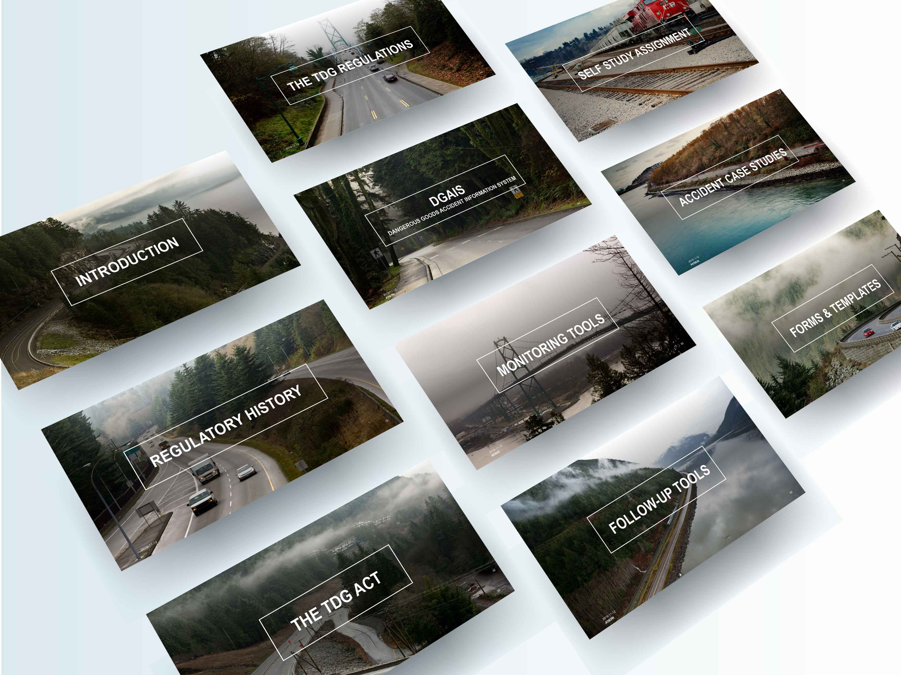
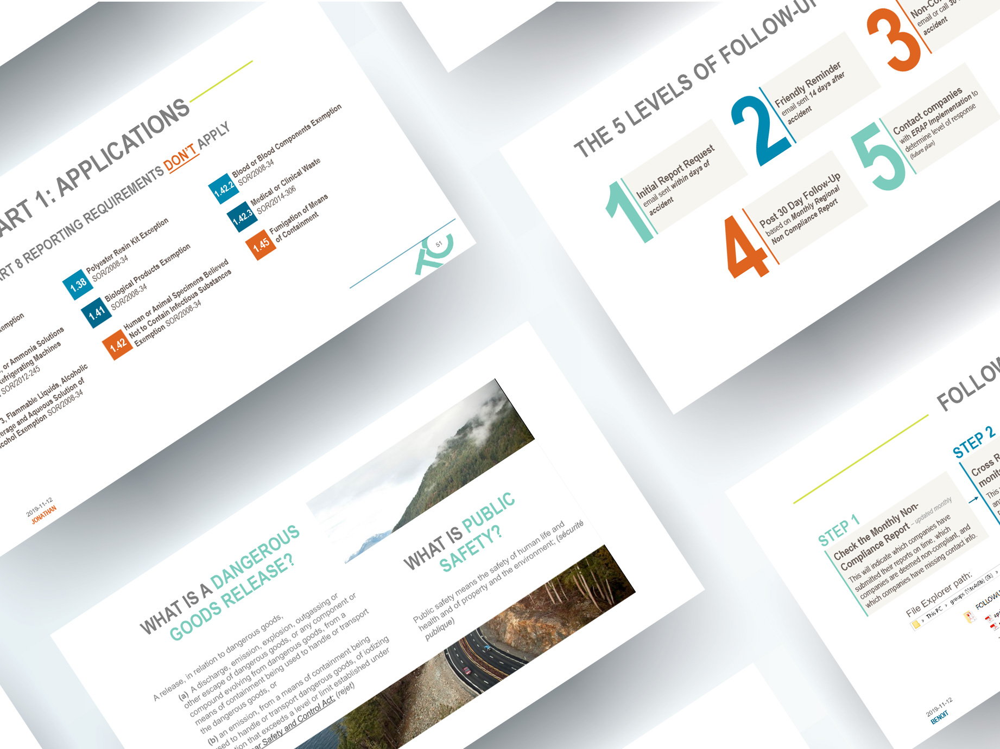
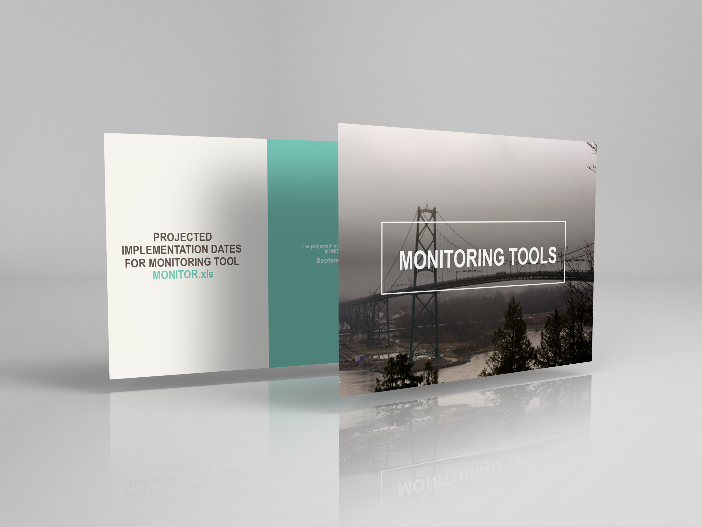
Let's get to the good stuff: Training Graphics
The run-down
The most important part of working with data is knowing what each input code represents. In the case of transportation of dangerous goods, there are hundreds of vehicle types for the various modes of transportation that are used. While working on the team, reading through all these codes paired with their respective vehicle type with no way to visualize them other than googling what a "tank truck with pup trailer" looks like leaves a lot of room for error if not familiar with the specs of these types of vehicles.
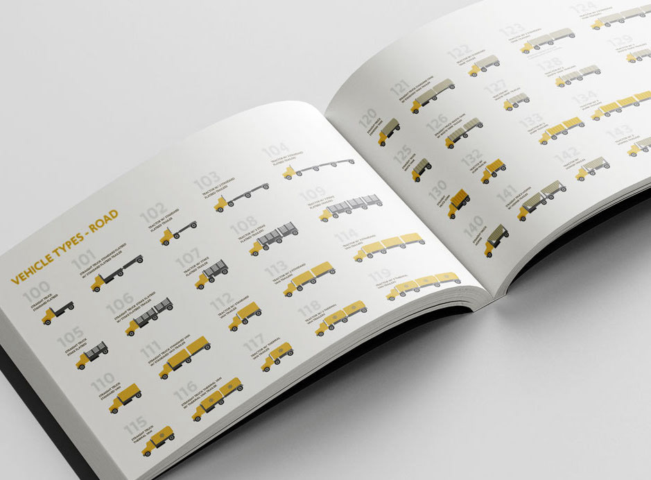
With lots of research on the various vehicle types for road, rail, marine, and air transport methods, I was able to create simple and informative graphics for each input code. This helps the data clerk visualize the vehicle type more efficiently while reading through the tens of reports received everyday. The result leaves a lot less room for data entry errors, and a more efficient way of analyzing reports. Everyone wins here.
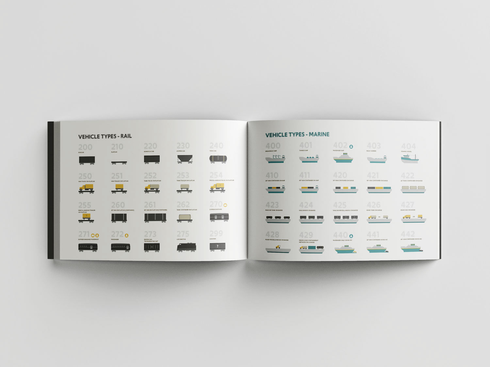
Now that vehicle types are taken care of, can we do the same for the container type that the dangerous goods are placed in? Well, without a doubt we can do that. Just like vehicle types, if someone is unfamiliar with these types of containers, it's difficult to visualize what a lot of means of containments look like without doing research. I designed icons for each input field to help the data entry clerk connect whatever words submitted in a report with the codes in a database system.
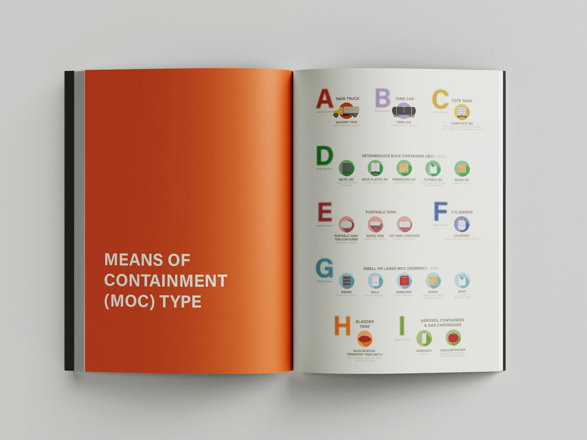
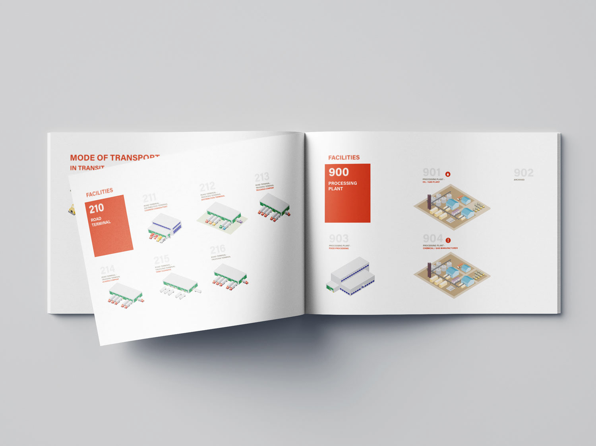